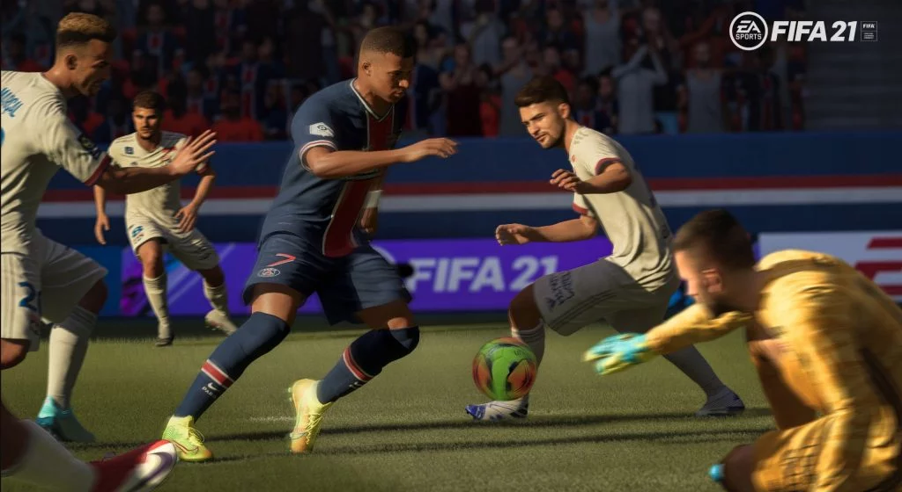

Fifa 21 Review
Shtojini muzikë festimeve tuaja kur të shënoni
Në botën reale, stadiumet e Premier League nuk kanë tifozë falë pandemisë momentale. Në FIFA 21, të njëjtat stadiume janë të mbushura plot, të mbushura me të njëjtat turma të animuara, të shëmtuara, që janë bërë pjesë e FIFA për më shumë se gjysmë dekade. Ne nuk jemi të sigurt se kush është më keq, veçanërisht kur këta tifozë virtualë kanë krijuar një zakon të keq për të përsëritur të njëjtin brohoritje të bazuar në klub pa pushim, pavarësisht se si po shkon ndeshja. Ajo që ne jemi duke u përpjekur të themi është se në sipërfaqe, FIFA 21 ndihet si një update i FIFA 20, dhe jo si një lojë më vete. Veçanërisht në një nivel grafik, do ta keni të vështirë për të gjetur ndonjë përmirësim të dukshëm. Sigurisht, ndriçimi duket pak më mirë nganjëherë në kënde të caktuara, dhe disa animacione shtesë kanë bërë që përplasjet e lojtarëve të duken pak më reale, por përveç kësaj, kjo është FIFA 20, dhe seria me të vërtetë ka filluar të mbetet prapa lojërave të tjera sportive, si NBA 2K21 për shembull, kur bëhet fjalë për pamjet vizuale. Shpresojmë që versioni i next-gen të jetë një përmirësim nga ky aspekt.
Për fat të mirë, ndryshimet dhe shtesat e gameplay nga EA performojnë mire dhe janë mëse të dukshme. Ndryshimi më i madh për gameplay-in është se jemi kthyer në lojërat me rezultate të çmendura të mbushura me gola dhe situata kaotike. Nuk është se mbrojtja është bërë më e vështirë, thjesht lojtarët sulmues duket se janë tepër më të shpejtë dhe dominues. Lojtarë si Salah mund të dalin nga përballjet me mbrojtësat shumë më lehtë sesa në FIFA 20, i cili, në kombinim me disa pasime të sakta, rezulton në shumë gola.
Përfundimi është se FIFA ndihet edhe më stil arcade këtë vit dhe nuk ka asnjë lidhje me një simulim të lojës së futbollit. Mbajtja e portës së paprekur kërkon një përqendrim serioz ndërsa përpiqesh të markosh lojtarët kundërshtarë që thjesht duken më të shpejtë në çdo aspekt se të tutë. Por hej, nuk mund të mohohet që FIFA 21 sjell plot drama.
Besoj se e keni dëgjuar këtë më parë: FIFA 21 nuk është një update i madh i FIFA 20, por një ngarkesë e vogël përmirësimesh e ndihmojnë atë të ngrihet mbi paraardhësin e saj. Aksioni brenda fushës padyshim që ndihet më jo-real në krahasim me vitet e kaluara, por nuk mund të mohohet ngazëllimi që vjen me luajtjen përmes një loje të çmendur 5-4. FIFA është ende mbreti në ofrimin e një pakete të fuqishme dhe të aksesueshme futbolli, por seria duhet të ketë një përmirësim në next-gen, veçanërisht kur bëhet fjalë për prezantimin e dizajnit.
Për të gjithë ju që jeni të interesuar, për këto lojëra, sigurohuni të ndiqni këtë link për në faqen zyrtare të GamingKosovo, ose mund të vizitoni çdo pikë shitje të GamingKosovo.